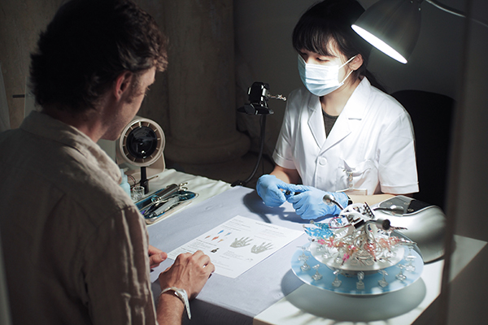

What it means to be human has been redefined by technology, which has become part of our outdated bodies. Nail art, as a kind of artificial decoration worn around the clock, seems to reshape the boundaries of the human body as it lengthens the nails. Different materials, lengths, and shapes of nails bring different tactile experiences.
Onycho Lab invites audiences to participate in a body-modification procedure, which reprograms the ordinary act of manicure. Exploring how, in a world where bodies are constantly in dialogue with the material objects they come into contact with, even such insignificant modifications could rebuild the human body's perception of its own boundaries. Through a feminist lens, define when those boundaries are violated, and examine the alienation of power within this process.